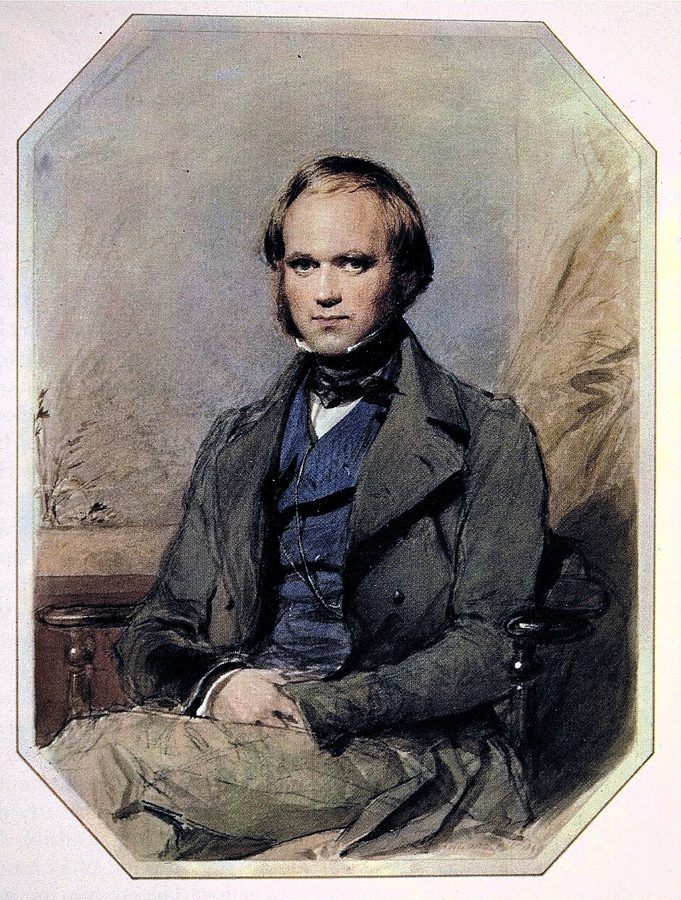
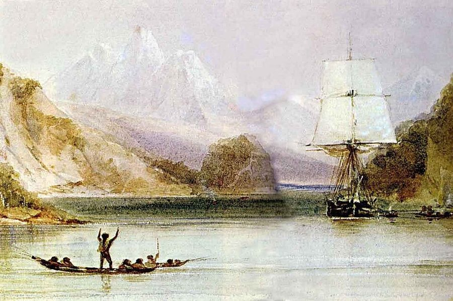
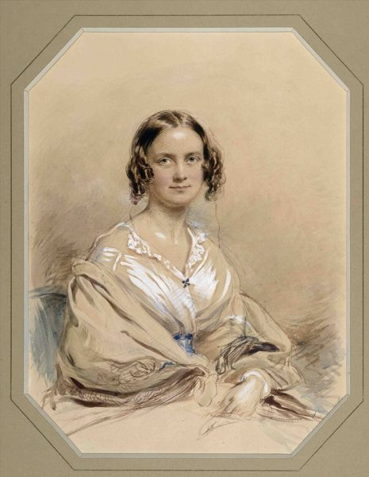
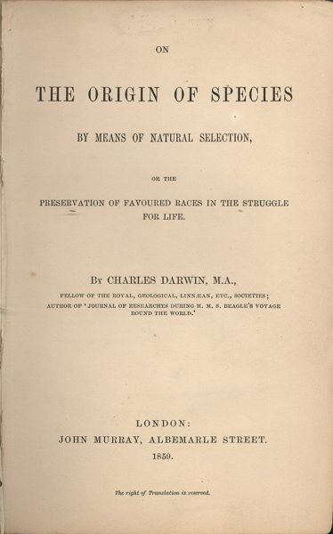
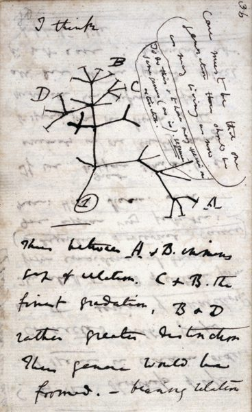
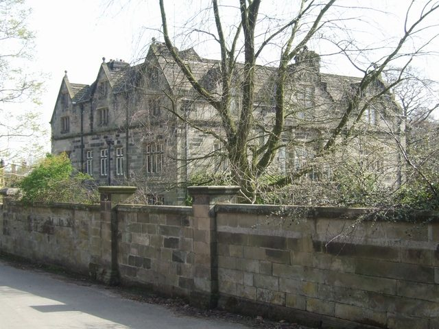

这一页在做什么
达尔文篇的前半。从小猎犬号归来讲起：Phillips 先问，环球航行让达尔文看到的自然像什么，其中又有什么值得赞美；接着读《物种起源》里两段最激昂的文字，看达尔文的散文怎样在赞叹和不安之间摇摆。然后退回 1837 年，达尔文在伦敦地质学会读了四篇论文，最后一篇讲蚯蚓。读的时候抓两条线：自然的丰饶和它的代价；看得见的地面和地下发生的事。

George Richmond 1840 年画的达尔文，三十一岁，回国三年多。这一页讲的 1837 年的论文，就是这几年里写的。George Richmond，公有领域，维基共享资源 读之前：这一页在全书的哪里
序章说，达尔文和弗洛伊德的道德不写成规矩，藏在他们赞美什么、为什么沮丧里（序章第 29 段）；第 14 段点出两条线索，一条就是达尔文一辈子对蚯蚓的兴趣。这一页是这条线索的第一站。序章讲过的崇高、灭绝、哀悼，这里都会回来。这一页停在 1837 年的蚯蚓论文上，第 28 段预告达尔文晚年还会回到蚯蚓，下一页就是那本晚年的书。
一个看清了自然有多残酷的人，还能在自然里赞美什么？
读的时候带着这几个问题。不用先找答案，读完回来对照「检查一下理解」。
Phillips 说，达尔文挑什么来赞美，就会把道德「偷运」回一个冷漠的宇宙。这个说法要成立，需要什么前提？§1
《物种起源》的末段为什么被说成「两头下注」？两头各押的是什么？§1
1837 年那几篇地质论文，讲的是消失还是保存？Phillips 凭什么说它们底下有一场精神危机？§2
「农夫犁地只是笨拙地模仿蚯蚓」，这句话把人放到了等级的哪里？§2
这一页的路线
§1 是「一个问题，几段引文」：第 1 段提出全篇的问题（自然像什么，该赞美什么），接着借一位传记作者和一封家信，说田园式的放松要靠不去想起源；再引《物种起源》两段，读出达尔文在赞叹和沮丧之间摇摆。第 12 段蚯蚓突然冒出来，是从《物种起源》末段那张风景清单里拎出来的。§2 换了节奏：先交代 1837 年的论文从哪来（舅舅、Maer 的花园、传记作者复原的场面），中间插一段「消化」的双关；第 20–23 段像题外话，回头看同年另三篇论文里的「消失」；第 24 段起才真正读蚯蚓论文，读法是先看达尔文怎样一步步论证，再看他的口气在哪里变了。最后一段只有几句，把哀悼、恩典、丁尼生连在一起，留给下一页。
§1 第 1–13 段
§2 第 14–29 段
引文
读法
传记和家信
不问起源
《起源》两段
两头下注 只赞美蚯蚓
Maer 的花园
消化即劳作
珊瑚论文
挽歌或颂歌
蚯蚓论文
人的尺寸
本站示意图。蓝点是 Phillips 引的文本（达尔文、传记作者），橙点是 Phillips 读出来的意思；折线是阅读顺序，虚线是原书的空行。 作者落在哪： 小猎犬号之后，达尔文的自然又丰饶又残酷，《物种起源》的末段两头下注；写蚯蚓时他却只有赞美，Phillips 说这仿佛是他抵御道德绝望的办法。1837 年的论文已是如此：看得见的地面是地下故事的结尾，人犁地只是笨拙地模仿蚯蚓。
分节地图
这一页是原书达尔文篇的第 1–2 节。原书没有小标题，只在节与节之间空一行；粗体的节名是本站起的，斜体是这一节第一段开头的几个词，在电子书里搜它就能跳过去。读完打个勾。
小猎犬号归来，纠缠的河岸约 1900 词 Darwin came back, after five years … 全篇的问题在第 1 段。第 6 段起读《物种起源》的两段原文，第 12 段蚯蚓第一次出场。 1837 年的蚯蚓论文约 2700 词 Darwin finished revising the diary of … 第 14–19 段讲论文的来历；第 20 段起回看同年另三篇；第 24 段起才读蚯蚓论文本身。
先用中文过一遍：这一页的概念
先把这一页用到、作者默认你懂的几个概念讲一遍。讲的是概念本身，作者拿它做什么，读原书时自己看。
§1 自然选择 natural selection 达尔文和华莱士（Alfred Russel Wallace）1858 年在伦敦林奈学会联名提出，达尔文 1859 年在《物种起源》里展开。三个条件就够：同一物种的个体彼此有差异；差异能遗传；生下来的比活得下去的多。于是在当地条件下稍占便宜的个体，留下的后代也多一点，代代累积，物种就变了。程序员可以想遗传算法：随机变异加筛选。不同的是，自然里没人写「适应度函数」，筛子就是环境本身。它没有方向，也不保证「进步」；「适者生存」是斯宾塞（Herbert Spencer）后来的说法。今天它仍是进化生物学的核心，和遗传漂变等机制一起讲。
在这一页： 第 7 段引的是《物种起源》第 4 章「自然选择」，第 9 段末段把它列进「法则」。第 10 段的争点就在这里：这个机制本身不许诺进步。
§1 田园诗传统 pastoral 西方最老的文学传统之一：古希腊的忒奥克里托斯（Theocritus）写牧人对歌，维吉尔（Virgil）的《牧歌》接着写。牧羊人在树荫下吹笛、谈情，没有苦活，也很少有死亡；它其实是城里人对「简单的乡下」的想象。英国诗里一直有这条线，弥尔顿（John Milton）的《利西达斯》（Lycidas）就是用田园体写的挽歌。批评家燕卜荪（William Empson）1935 年的 Some Versions of Pastoral 把这个词用宽了：把复杂的事放进简单的人和场景里讲，都算一种田园。画家普桑（Poussin）的名画里，牧人在墓碑上读到「我也在阿卡迪亚」（Et in Arcadia ego）：田园里也有死亡。
在这一页： 第 3 段说崇高的自然让「柔软的绿色之物」显得可笑，也揭穿了某些田园诗那种吓坏了的舒适；第 10 段说《物种起源》末段从传统田园出发，落到「等级的田园」；第 27 段说蚯蚓论文是一种反讽的田园。
§2 渐变论 / 均变论 gradualism / uniformitarianism 地质学的老争论。18 世纪末的赫顿（James Hutton）和 1830–1833 年莱尔（Charles Lyell）的《地质学原理》主张：今天看得见的微小作用（雨水冲刷、河流沉积、地面一点点抬升），乘上极长的时间，就足以造出山脉和峡谷，用不着大洪水那样的灾变。这叫均变论，对手是居维叶（Cuvier）等人的灾变论。达尔文在小猎犬号上读了《地质学原理》第一卷，后来把同样的思路用到物种上：物种也是一点一点变的，这叫渐变论。程序员的类比是复利，或者一个仓库里成千上万次小提交。今天的地质学承认也有灾变（比如小行星撞击），但「小作用乘长时间」仍是基本方法。
在这一页： 第 20 段说那年的论文都在讲不知不觉中进行的变化；第 26 段说蚯蚓数量多，补上了每一条的微小工作量。
§2 腐殖土 vegetable mould 地表最上面那层松软、颜色深、肥沃的土，今天的土壤学叫表土（topsoil），里面混着分解了的有机质（腐殖质，humus）。vegetable mould 是 18、19 世纪英国的通行叫法，字面是「植物土」，因为人们以为它主要是落叶、枯草烂出来的。达尔文 1837 年的论文说，它更该叫「动物土」：地表的细土大多被蚯蚓吞下、排出过。这里的 mould 是古英语来的「松土」，和「霉菌」「模子」那两个 mould 只是拼写相同。蚯蚓怎样把地面的东西埋下去，见生物扰动 。
1822 年：撒在地面上
1837 年：挖开来看
泥灰、煤渣
原来的泥炭土
15 年
草皮 ½ 英寸
细土 2½ 英寸
碎块层 1½ 英寸
原来的泥炭土
本站示意图，按达尔文 1837 年论文里 Maer 附近一块田的数字画（1881 年的书里写明是 1822 年撒的）。按达尔文的解释，泥灰、煤渣没有往下沉，是蚯蚓把下面的细土吃下去，排到地面上，一层层盖住了它们。 在这一页： 第 24 段引了论文的第一句和结论：大家把这层土的来源弄错了，名字也就叫错了。第 25 段的数字就是图里这块田。
书里的人和作品
按在书里出现的顺序排，标题前是节号。作品只讲到读懂这一页需要的程度。
§1 篇名和题词篇名 Darwin Turns the Worm 套的是英语谚语 even a worm will turn（再卑微的人被逼急了也会反抗）。turn 在这里还有别的意思：达尔文「转向」蚯蚓（第 19、23、28 段都用 turn to 说这件事），也像是把蚯蚓翻过来重新看。题词出自弥尔顿《失乐园》（1667）第 9 卷：吃了禁果之后，亚当责怪夏娃听信了「那条假的 Worm」。这里的 Worm 是古义「蛇」，指附在蛇身上的撒旦。篇名和题词放在一起，可以读成：从最受诅咒的「虫」讲起，替蚯蚓翻案。
§1 小猎犬号和那本 Journal
随船画家 Conrad Martens 画的小猎犬号，在火地岛的水道里，前景是当地人的独木舟。Conrad Martens，公有领域，维基共享资源 1831 年底，22 岁的达尔文以博物学者的身份登上英国海军测量船小猎犬号（HMS Beagle），1836 年 10 月回国，五年里大半时间在南美。他的旅行日记整理成书，1839 年出版，书里通称 Journal（后来改名《小猎犬号航行记》）。第 1 段列的火地岛土著、Rosas 的军队、和船长相处的不易，都是这五年的事。Phillips 拿这一段立起全篇的问题：见识过这么多、这么猛烈的自然以后，还有什么可以赞美。
FitzRoy Robert FitzRoy，1805–1865 小猎犬号船长，脾气难测，后来做过新西兰总督，也是英国天气预报的开创者。第 1 段说他「难相处」。
Rosas Juan Manuel de Rosas，1793–1877 阿根廷的军事强人，1829–1852 年间两度主政布宜诺斯艾利斯。1833 年达尔文在科罗拉多河边他的营地见过他，那时他正领兵征讨草原上的原住民。
§1 Janet Browne 的传记和 Moor Park 的信
George Richmond 1840 年画的 Emma Darwin。George Richmond，公有领域，维基共享资源 科学史家 Janet Browne 写过两卷本达尔文传，第一卷 Voyaging 出版于 1995 年。第 2 段引的是写航行归来的部分：英国人眼里那个「柔软的绿色之物」，被南美的火山、地震和蛮荒比得失了色。第 3–4 段紧接着引一封家信：1858 年 4 月，达尔文到萨里郡 Moor Park 的水疗所养病，那时正在赶写后来成为《物种起源》的书。他写信给妻子说，在草地上睡着了，醒来鸟在唱，他一点也不在乎这些鸟兽是怎么形成的。信的原文见下面「原典」。
Emma Darwin 1808–1896 达尔文的表姐和妻子，Josiah Wedgwood II 的女儿，虔诚的基督徒。
§1 《物种起源》的两段和「二十年前」那句话
《物种起源》1859 年第 1 版的扉页。John Murray，公有领域，维基共享资源 《物种起源》1859 年 11 月出版。第 7 段引的是第 4 章「自然选择」里的一段，第 9 段是全书末段（「纠缠的河岸」）。Phillips 引的末段里有「造物主」，那是 1860 年第 2 版才加的，第 1 版没有（见「原典」）。第 10 段括号里那句「人在傲慢中自以为……」，Phillips 说是二十年前写在 Journal 里的，其实出自 1838 年的笔记本 C，原文是 interposition（上帝的干预）和 truer，Phillips 写成了 imposition 和 true。第 6 段的 George Lewes 是维多利亚时代的评论家和科普作家。
Gould Stephen Jay Gould，1941–2002 美国古生物学家、科普作家，长期在哈佛任教，一再论证进化没有预定的方向，谈不上「进步」。第 10 段 Phillips 引他两句话作援军。
§2 1837 年的四篇论文
达尔文 1837 年夏天在笔记本 B 里画的分叉的树，左上角写着 I think。那年 7 月他开始在这本笔记里私下记录物种会变的想法，和蚯蚓论文是同一年；Phillips 没有提到它。Charles Darwin，公有领域，维基共享资源 达尔文回国后在伦敦地质学会（Geological Society of London）很快站稳了脚，1837 年一年读了四篇论文：1 月讲智利海岸的抬升，5 月讲拉普拉塔河一带的哺乳动物化石和珊瑚礁与地面下沉，11 月 1 日讲蚯蚓和腐殖土。前三篇当时只刊出学会写的第三人称摘要（「达尔文先生指出……」），第 20–22 段 Phillips 引的几句其实是摘要的措辞。蚯蚓那篇 1838 年先登摘要，1840 年刊出全文，第 24–27 段引的是全文。
Buckland William Buckland，1784–1856 牛津的地质学家，也是神职人员。他在 1838 年 3 月 9 日给学会的审稿意见里，把蚯蚓的作用叫作「一种新的地质力量」（第 15 段）。
§2 Maer、舅舅 Jos 和 Desmond 与 Moore
斯塔福德郡的 Maer Hall，2008 年。1807 年起它属于 Josiah Wedgwood II，直到他 1843 年去世。John M，CC BY-SA 2.0，维基共享资源 Maer Hall 是达尔文的舅舅 Josiah Wedgwood II 的家。1837 年达尔文来这里小住，舅舅指给他看几块地：几年前撒的石灰、煤渣，已经埋在草皮下面几英寸。据达尔文 1881 年的书，他 10 月初在这些田里挖坑量过。第 17 段这一幕出自科学史家 Desmond 和 Moore 1991 年的传记《达尔文》。第 18 段 Phillips 说，他们的措辞（无名的、千千万万）暗示了一种读法：蚯蚓仿佛是达尔文版的《英国工人阶级的形成》。
Josiah Wedgwood II 1769–1843 陶瓷商人，大名鼎鼎的 Josiah Wedgwood 的儿子，达尔文的舅舅，1839 年又成了他的岳父。第 18 段说达尔文从他那里得到三样东西：上小猎犬号的许可、一位妻子、对蚯蚓的兴趣。
E. P. Thompson Edward Palmer Thompson，1924–1993 英国历史学家。1963 年的《英国工人阶级的形成》从普通劳动者自己的经验写历史，是「从底层写历史」的代表作。
§2 Asa Gray 的信和丁尼生的《悼念》第 29 段只有几句，塞了两处引文。一处是达尔文 1861 年写给 Asa Gray 的信：Gray 想把变异说成上帝设计好的，达尔文回信说他越来越不同意，家养动植物里有「一大片无设计的变异」，等着自然选择拿去用。另一处是丁尼生（Alfred Tennyson）的长诗《悼念》（In Memoriam A.H.H.，1850），为早逝的好友 Arthur Hallam 写了十几年的挽歌。「为埋葬了的时光而生的遗憾」出自第 116 首：诗人问，春天勾起的是不是这种遗憾，接着答：不全是。
Asa Gray 1810–1888 哈佛的植物学家，达尔文在美国最得力的支持者，同时是虔诚的基督徒。
丁尼生 Alfred Tennyson，1809–1892 维多利亚时代的桂冠诗人。《悼念》里「自然，爪牙染红」一句常被拿来和达尔文并提。
原典：达尔文和弗洛伊德的原文
Phillips 引达尔文时常常只引半句、跳着引。下面把他这一页靠着的几段达尔文原文整段摆出来（达尔文 1882 年去世，原文早已是公有领域），配本站的全译；省略处用 …。
§1 第 4 段 · 达尔文给妻子 Emma 的信，1858 年 4 月 28 日，Moor ParkPhillips 在第 3–4 段引了这封信的开头，用两处省略号跳过了一些话。下面是信的第一段全文。
The weather is quite delicious. Yesterday after writing to you I strolled a little beyond the glade for an hour & half & enjoyed myself—the fresh yet dark green of the grand Scotch Firs, the brown of the catkins of the old Birches with their white stems & a fringe of distant green from the larches, made an excessively pretty view.— At last I fell fast asleep on the grass & awoke with a chorus of birds singing around me, & squirrels running up the trees & some Woodpeckers laughing, & it was as pleasant a rural scene as ever I saw, & I did not care one penny how any of the beasts or birds had been formed.—
本站译： 天气好极了。昨天给你写完信，我走出林间空地一小段，逛了一个半小时，很是快活：高大的苏格兰松那种鲜嫩又深沉的绿，老桦树褐色的柔荑花序衬着白色的树干，远处还镶着一圈落叶松的绿，景色好看得不得了。最后我在草地上睡熟了，醒来四周一片鸟叫，松鼠顺着树往上蹿，几只啄木鸟在笑，那是我见过的最惬意的乡村景色，我一点也不在乎这些走兽飞鸟是怎么形成的。
Phillips 跳过的主要是写景的那一句：松、桦、落叶松的颜色（另一处只省了 after writing to you）。他还把 as pleasant a rural scene 写成 as pleasant and rural a scene，把信里的 & 都换成 and。意思没变，原信更像随手写的家书。
§1 第 9 段 · 《物种起源》第 1 版（1859）全书最后一段，和它前面的一句Phillips 引的末段带着「造物主」，引到 into one 就收住了。下面是第 1 版的原文，开头加上紧挨着它的上一段的最后一句；中间列举几条法则的那一句，Phillips 照引了，这里用 … 省去。
And as natural selection works solely by and for the good of each being, all corporeal and mental endowments will tend to progress towards perfection. It is interesting to contemplate an entangled bank, clothed with many plants of many kinds, with birds singing on the bushes, with various insects flitting about, and with worms crawling through the damp earth, and to reflect that these elaborately constructed forms, so different from each other, and dependent on each other in so complex a manner, have all been produced by laws acting around us. … Thus, from the war of nature, from famine and death, the most exalted object which we are capable of conceiving, namely, the production of the higher animals, directly follows. There is grandeur in this view of life, with its several powers, having been originally breathed into a few forms or into one; and that, whilst this planet has gone cycling on according to the fixed law of gravity, from so simple a beginning endless forms most beautiful and most wonderful have been, and are being, evolved.
本站译： 又因为自然选择只凭着、也只为了每一个生物自身的好处起作用，一切身体和心智的禀赋都将趋向完美。凝望一片纠缠的河岸，是件有意思的事：岸上长满各种各样的植物，鸟在灌木上唱，各种昆虫飞来飞去，蠕虫在湿土里爬过；再想一想，这些构造精巧、彼此如此不同、又以如此复杂的方式相互依存的形态，全是由我们周围起作用的法则造出来的。……于是，从自然的战争里，从饥荒和死亡里，我们所能设想的最崇高的东西，也就是高等动物的产生，便直接随之而来。这样看待生命是宏伟的：生命连同它的几种能力，最初被吹进少数几个类型或一个类型之中；当这颗行星按照固定的引力法则循环运转，从如此简单的开端，无穷无尽、最美丽最奇妙的类型过去和现在都在演化出来。
第 1 版没有「被造物主」（by the Creator），1860 年 1 月的第 2 版才加上；1863 年达尔文给 Hooker 的信里说，后悔向舆论低头，用了《圣经》式的「创造」一词。开头那句「趋向完美」Phillips 没引，正好可以印证第 10 段说的进步神话。
§2 第 26–27 段 · 达尔文《论腐殖土的形成》（1837 年宣读，1840 年刊出）的结论和补记Phillips 第 26、27 段引了结论的两句，和 11 月 14 日补记里的数字。下面是结论的两段，和补记里的第二个例子。
Although the conclusion may appear at first startling, it will be difficult to deny the probability, that every particle of earth forming the bed from which the turf in old pasture land springs, has passed through the intestines of worms; and hence the term “animal mould” would in some respects be more appropriate than that of “vegetable mould.” I may conclude by remarking, that the agriculturist in ploughing the ground follows a method strictly natural; he only imitates in a rude manner, without being able either to bury the pebbles or to sift the fine from the coarse earth, the work which nature is daily performing by the agency of the earth-worm. … In the preceding communication, I have shown, that in a field lately reclaimed from being waste land, three inches of mould had been prepared by the worms in the course of fifteen years. We now find, that within the period of less than eighty years, (but how much less cannot be told, unless the date when the field was first ploughed were known) the earth-worms have covered the marl, which was originally strewed on the surface, with a bed of earth of an average thickness of no less than twelve or thirteen inches.
本站译： 这个结论乍看也许令人吃惊，但很难否认这样的可能：老草场上长出草皮的那一层土，每一粒都曾穿过蚯蚓的肠子；因此，「动物土」这个名称在某些方面比「植物土」更恰当。最后我想说，农夫犁地，用的是一种完全合乎自然的方法；他只是粗糙地模仿着自然每天借蚯蚓之力完成的工作，既不能把卵石埋下去，也不能把细土和粗土筛开。……在上一次的报告里我已经说明，一块新近从荒地开垦出来的田里，蚯蚓在十五年间造出了三英寸的腐殖土。我们现在发现，在不到八十年的时间里（究竟少多少说不准，除非知道这块田最初是哪年犁的），蚯蚓已经用一层平均厚度不下十二到十三英寸的土，盖住了原先撒在地面上的泥灰。
补记说的是「不到八十年」，Phillips 写成 eight years（八年），并说补记的意思是蚯蚓「比原先以为的还能干」。达尔文自己只说这份材料「印证」了先前的说法。原文是 agriculturist，Phillips 写成 agriculturalist。
§2 第 27 段 · 《腐殖土的形成》（1881）第 3 章的一条脚注：四十多年后的更正达尔文在晚年那本书里重讲了 Maer 附近这块撒过泥灰的田，在脚注里交代了补记里那个数字。
This case is given in a postscript to my paper in the ‘Transact. Geolog. Soc.’ (Vol. v. p. 505), and contains a serious error, as in the account received I mistook the figure 30 for 80. The tenant, moreover, formerly said that he had marled the field thirty years before, but was now positive that this was done in 1809, that is twenty-eight years before the first examination of the field by my friend. The error, as far as the figure 80 is concerned, was corrected in an article by me, in the ‘Gardeners’ Chronicle,’ 1844, p. 218.
本站译： 这个例子见于我在《地质学会会刊》（第 5 卷第 505 页）那篇论文的附言，其中有一处严重的错误：我把收到的报告里的数字 30 看成了 80。而且，那位佃户以前说他是三十年前给这块田上的泥灰，现在却确定是 1809 年，也就是我的朋友第一次查看这块田之前二十八年。数字 80 这个错误，我已在 1844 年《园丁纪事》第 218 页的一篇文章里更正过。
二十八年埋下一英尺多，比十五年三英寸快了一倍多。所以「比原先以为的更能干」碰巧说中了，依据的数字却错了两回：达尔文把 30 看成 80，Phillips 又把 80 写成 8。
词与短语
你用 Kindle，单个生词长按就能查，这里只收词典帮不上的：Phillips 的悖论和警句，每个词都认识、合起来拐了弯的说法，英式口语和学术腔，典故和双关。斜体小字是原句里连续的几个词，错字照电子书原样，搜它就能跳到那里。
§1 小猎犬号归来，纠缠的河岸
nature-shock
… suffering from nature-shock. He was …
自然冲击
仿 culture shock（到异国受的文化冲击）造的词。Phillips 说，让达尔文受不了的首先是自然本身：太多、太猛、太丰富。
count the cost
… one also had to count the cost …
算一算代价
《路加福音》14:28 的说法：盖楼之前先坐下来算花费。这里指自然的丰饶是拿死亡和苦难换来的，达尔文要一点点认清这笔账。
a stark question of analogy
… there was a stark question of analogy:
一个尖锐的「打什么比方」的问题
不是逻辑课上的类比推理，是问：自然像什么？像花园、像战场，还是像工厂？比方一选定，该从自然里学什么也跟着定了。
smuggle morality back
… would inevitably smuggle morality back into …
把道德偷运回来
smuggle 是走私。科学上的自然不讲道德，但达尔文挑什么来赞美，就等于从后门把道德运了回来。这是全篇的纲。
the soft green object
… not the soft green object familiar …
那个柔软的绿色之物
传记作者 Janet Browne 的说法：英国人眼里的自然，就是一片温和的绿草地。下一段 Phillips 接过来说，见过南美以后，它显得可笑。
terrified cosiness
… exposed the terrified cosiness of certain …
吓坏了的舒适
两个词互相拧着：舒适本来是放松的，Phillips 说这种舒适是出于害怕，躲进温馨的田园，好不去看外面真实的自然。
certain versions of pastoral
… cosiness of certain versions of pastoral.
某几种田园诗
暗用燕卜荪（William Empson）的批评名著 Some Versions of Pastoral（1935）。pastoral 见上面的概念「田园诗传统」；第 27 段还有一个 version of pastoral。
did not care one penny
… and I did not care one penny how …
一点也不在乎
口语，一个便士都不值得在乎。这是达尔文写给妻子的话：正在写《物种起源》的人，此刻不管鸟兽怎么来的。
a virtual idyll
… infinitely reassuring, a virtual idyll, if …
简直是世外桃源
virtual 在这里是「几乎、实际上等于」，不是「虚拟的」。idyll 是田园诗，也指无忧无虑的美好情景。
the denial of origins
… sustained through the denial of origins.
靠不去问起源来维持
origin 让人想到《物种起源》（Origin）。田园的快乐要靠不想「这些东西从哪来」，而达尔文的工作恰恰是追问起源。
morally equivocal
… from nature morally equivocal. We are …
在道德上说不清
equivocal 是模棱两可。从自然得来的满足和安慰，现在说不清该不该有：好看的风景背后是淘汰。
relaxing in the killing-fields
… always relaxing in the killing-fields.
在屠场上休憩
killing fields 让人想到柬埔寨红色高棉的「杀戮场」（1984 年的电影《杀戮战场》让这个词广为人知）。我们在草地上放松，脚下就是自然的屠场。
the promise of happiness
… beauty is simply the promise of …
幸福的许诺
化用司汤达（Stendhal）《论爱情》（1822）的名言「美不过是幸福的许诺」。Phillips 借来问：达尔文在自然里找到的美，许诺了什么？
what threatens to exhaust him
… inspired by what threatens to exhaust …
本来要把他累垮的东西
第 4 章论证最细、最费力，写着写着他反而兴奋起来。exhaust 既是「累垮」，也有「穷尽」的意思：讲不完的变异。
He cannot, of course, call it
… He cannot, of course, call it …
他当然不能管它叫……
自然选择里没有谁有意「合作」，所以达尔文不能说「物种和环境成功地合作」；可他描写的，分明是各方配合得很好。
bet-hedging
… In this famously bet-hedging conclusion, Darwin …
两头下注的
hedge one’s bets 是两边都押一点，免得输光。末段一头讲自然之战、饥荒和死亡，一头讲崇高的结果和造物主。
the pastoral of heirarchy
… vindication of the pastoral of heirarchy, …
等级的田园诗
heirarchy 是原书的拼法（规范拼法 hierarchy），全书都这样拼。意思：万物各安其位、人在顶上的那幅令人安心的图景。
the founding Father
… and the founding Father. If the …
开创一切的天父
大写的 Father 指上帝。founding fathers 平常是「开国元勋」，这里借来说创世的那一位。
a reassuring progress myth
… is a reassuring progress myth underpinning …
令人安心的进步神话
相信历史和自然总在变好。myth 在这里不是「谎言」，是撑起一种世界观的故事。
the pedestal of arrogance
… smash the pedestal of arrogance and …
傲慢的基座
Gould 的话。pedestal 是雕像的底座：人把自己立在进化的顶端。和前面笔记里的 Man in his arrogance 正好呼应。
going nowhere special
… a prodigal process going nowhere special, …
不往哪里去
prodigal 是挥霍的（「浪子回头」的浪子就是 prodigal son）。自然挥霍地生、挥霍地死，没有方向，也没有终点。
from, as it were, a personal point of view
… cruel from, as it were, a personal …
从个体的角度说
对物种，淘汰只是机制；对每一个要死的个体，它就是残忍。as it were 是「可以这么说」，Phillips 自己知道这是打比方。
can we afford
… can we allow ourselves, can we afford, …
我们承受得起吗
afford 不只是「买得起」，是「承担得起后果」。被丰饶打动还是被残酷打动，选哪一边，都有道德上的代价。
at once exhilarated and utterly dismayed
… at once exhilarated and utterly dismayed.
又兴奋，又彻底沮丧
at once 在这里是「同时」，不是「立刻」。
a comforting irony
… perhaps a comforting irony that Darwin …
让人宽慰的反讽
用和气、合作、谁都能参与的研究方法，发现了一个无情的自然。前面有 perhaps：这是 Phillips 的一个看法。
the conventional iconography of worms
… given the conventional iconography of worms …
蚯蚓的传统形象
iconography 原指画里的象征体系。在绘画和诗里，虫子代表死亡和腐烂（尸体喂虫），所以说赞美蚯蚓是个悖论。
shuffling of the hierarchies
… undogmatic shuffling of the hierarchies to …
把等级洗一洗牌
shuffle 是洗牌：不是推翻等级，而是打乱重排。undogmatic 说他不立新教条。第 27 段又说一次 shuffling the traditional hierarchies。
had already inherited the earth
… had already inherited the earth: the …
早已承受了地土
反用《马太福音》5:5「温柔的人有福了，因为他们必承受地土」（the meek shall inherit the earth）。福音说将来；Phillips 说达尔文会暗示（would imply），穷苦的早已拥有大地，最穷的就是蚯蚓。
jotted in the margins
… Darwin jotted in the margins of …
在书页边上随手写下
写的是 Never say higher or lower（别说高等、低等）。一般说是达尔文写在别人书上的批注，本站没有查到可靠的原文出处。
put our moral money on
… If we put our moral money on …
在道德上押注于
put money on 是下注。如果我们把价值押在变异和生存上，那么见机行事就会显得比善良更要紧。
sentimental about earthworms
… couldn’t be sentimental about earthworms.
对蚯蚓没法多愁善感
紧接着「机会主义比善良更要紧」。Phillips 没有展开；可以这样读：蚯蚓不讲温情，赞美它也不是滥情，赞的是它实打实的活计。
§2 1837 年的蚯蚓论文
of a piece with
… It was of a piece with his …
和……一脉相承
字面是「同一块料子做的」。蚯蚓论文和他在小猎犬号上关心的是一回事：我们看地表时，到底看见了什么。
unprepossessing beginning
… from this unprepossessing beginning sprang a …
毫不起眼的开头
传记作者 Desmond 和 Moore 的话。unprepossessing 是「不讨人喜欢、不起眼」。
subtle, as ever, in their intimations
… are subtle, as ever, in their intimations.
一如既往，暗示得很巧妙
intimation 是不明说的暗示。下一句「蚯蚓是达尔文版的《英国工人阶级的形成》」是 Phillips 从他们的措辞里读出来的，不是他们写明的。
a prodigious work of digestion
… was a prodigious work of digestion.
一项浩大的消化工程
work 既是「劳动」，也是「工程、作品」。接着上一句「用劳动来讲它们的故事」：蚯蚓的劳动就是消化。
material to digest
… amazing amount of material to digest, …
要「消化」的材料
digest 熟词生义：理解、吸收资料。Phillips 把达尔文消化资料、他一辈子的胃病、蚯蚓的消化串成一串双关。
change the face of the earth
… to change the face of the earth.
改变世界的面貌
双关：比喻上，达尔文消化的材料改变了世界；字面上，蚯蚓真的在改变地表。
suffice it to say
… earthworms, suffice it to say, their …
只消说一句
书面套话，「不多说了，只说一点」。这里带点调侃：达尔文的胃不争气，蚯蚓的胃好使。
forced and unforced labour
… the body’s forced and unforced labour, …
身不由己的苦工，也是自然而然的劳作
forced labour 是「强迫劳动、苦役」。消化既是身体被迫干的活，又不用谁逼。
torn between preservation and effacement
… nature is torn between preservation and …
在保存和抹去之间撕扯
effacement 是把痕迹抹掉。前面是 As though：Phillips 说「仿佛」自然拿不定主意，是留下证据还是抹掉一切。
brief stays against extinction
… are like brief stays against extinction, …
对灭绝的片刻抵挡
stay 在这里是「阻止、撑住」（法律上 stay of execution 是缓期执行），不是「停留」。像诗人 Frost 说诗是对混乱的「片刻抵挡」（a momentary stay against confusion）。序章第 14 段也有 stays against time（那里说两人并不寻求这种抵挡）。
how sheerly provisional life was
… was how sheerly provisional life was.
生命是多么彻底地临时
provisional 是「临时的、暂定的」，像临时政府。悖论在前半句：生命越顽强、越丰富，越显出它不过是暂时的。
a covert moral and therefore literary dilemma
… a covert moral and therefore literary …
隐蔽的道德困境，因而也是文学困境
therefore 是关键：用什么体裁写（挽歌还是颂歌），就是怎样评价。描写自然，躲不开表态。
the paean of praise
… is it the paean of praise …
颂歌
paean 原是古希腊献给阿波罗的颂歌，和前面的 elegy（挽歌）对着说。
go with the coral
… If we go with the coral, …
站在珊瑚那边
go with 是「选、支持」。珊瑚在下沉的陆地上不断往上长，是幸存者；可就算为它喝彩，也不能不看那一寸寸沉下去的陆地。
a muffled spiritual crisis
… is undergoing a muffled spiritual crisis.
一场闷着的精神危机
muffled 是声音被捂住了。危机在，但没有说出口，只能从论文的字缝里听出来。
what might once have been called
… what might once have been called …
从前会被叫作……的东西
后面接 spiritual nourishment（精神食粮）。Phillips 故意用宗教的旧说法，放在一个讲蚯蚓吃土的地方，可以读出一点玩笑。
overlook
… too much looking makes you blind …
忽略；字面是「看过头」
达尔文论文第一句说，有些难处 have been overlooked（被忽略了）。Phillips 说他在用双关：把 overlook 拆成 over-look，看得太多、只盯着表面，反而看不见下面。
metaphysically suggestive
… with its metaphysically suggestive language …
带着形而上的弦外之音
the superficial（表层的，也是「肤浅的」）、look deeper down（往深处看），这些地质学的话都能读成哲学的话。
we have mistaken an origin
… overlooking we have mistaken an origin.
我们弄错了一个起源
人们把这层土的来源归给植物（vegetable），其实是动物。origin 又一次让人想到《物种起源》。
The buried Joke
… The buried Joke in this modest …
埋着的玩笑
buried 双关：藏在文章里，也像东西被蚯蚓埋进土里。Joke 大写是电子书原样。玩笑是：蚯蚓造出了大地。可以读成在跟创世故事开玩笑。
justify the ways of worms to Man
… to justify the ways of worms to …
向人证明蚯蚓之道是正当的
化用《失乐园》第 1 卷开头弥尔顿自述的宗旨 justify the ways of God to men（向世人证明上帝之道是正当的），把 God 换成了 worms，正好接上篇首的题词。
unmock awe
… a kind of unmock awe …
不带戏仿的敬畏
Phillips 造的词。mock 有「仿的、假装的」意思（mock-heroic 是仿英雄体，拿庄重的笔调写琐事来取笑）。unmock 是说：写的是蚯蚓，敬畏却是真的。
a serious disappearance
… to explain here is a serious disappearance;
一桩不小的「失踪案」
disappearance 是「不见了」，也可以读出一点侦探故事的味道：撒在地上的石灰、煤渣去哪了？Phillips 接着说，这回不是失，是得。
turns things over
… akin to ploughing that turns things over.
把东西翻过来
turn over 是翻土。达尔文说翻土的是蚯蚓，可以和篇名 Darwin Turns the Worm 里的 turn 对着看。
en masse
… Worms, en masse, are akin to …
成群结队地、全体
法语，「整批地」。单条蚯蚓不起眼，成千上万条加起来就像一群地质学家。
difficult to deny the probability of
… difficult to deny the probability of.
很难否认其可能的（结论）
Phillips 的玩笑：借这篇论文里的原话，说达尔文二十年后还会得出更惊人、同样「很难否认」的结论（物种会变）。句尾悬着一个 of，是故意学这句话的腔调。
aiding and abetting
… were aiding and abetting the work …
帮着、助着
法律用语「协助和教唆（犯罪）」。用在蚯蚓帮人肥田上，带点打趣：像是共犯。
an exemplary new tribe
… discovered an exemplary new tribe;
一个值得效仿的新部落
像人类学家发现了一个模范部落。小猎犬号之后，这回的「部落」就在自家草地底下。
a poor imitation of a worm
… Man is a poor imitation of …
人是对蚯蚓的拙劣模仿
老话说「艺术模仿自然」；这里人连模仿都模仿得差。parodic 在前面：这一层颠倒有戏仿的味道。
cutting men down to size
… not cutting men down to size, …
杀杀人的威风
cut down to size 是口语：让自视过高的人认清自己的分量。Phillips 说达尔文不是要贬低人，是要给人 the right size（合适的尺寸）。
in a rude manner
… only imitates in a rude manner, …
粗糙地、笨拙地
在达尔文的句子里，rude 是「粗糙、不精细」。Phillips 把 OED 里 19 世纪的十几个意思（未开化、无礼、下流、肮脏……）一股脑压在农夫身上：在这幅图里，人才是原始的那一方。
Art imitates nature, but poorly
… Art imitates nature, but poorly:
艺术模仿自然，只是模仿得不好
「艺术模仿自然」是亚里士多德《物理学》以来的老话，art 也指手艺。这句是 Phillips 的话，不是达尔文的（前面少了一个引号，见下面的错字表）。
the last will indeed be first
… the last will indeed be first;
在后的真要在前了
《马太福音》20:16「在后的将要在前，在前的将要在后」。最末等的蚯蚓排到了人前面。
preparing the ground
… incredible rate; preparing the ground.
整地；为后来的事铺路
字面是为播种整好土地；比喻是「做准备、打基础」。这一段之后，Phillips 就讲达尔文晚年还会回到蚯蚓。
in some comically glib way
… in some comically glib way, …
用一种轻巧得可笑的方式
glib 是说得太轻巧、太顺溜。整句是：达尔文在这篇论文里并不完全是在轻飘飘地说「我们该努力像蚯蚓」。not quite 是「不完全是」，否定得留了余地。
quasi-Wordsworthian
… in a quasi-Wordsworthian way, that …
有点华兹华斯式的
华兹华斯（Wordsworth）的诗教人从自然里学道理，《转折》（1798）里说「让自然做你的老师」。quasi 是「类似、准」。
to restore, I think, a kind of faith
… to restore, I think, a kind …
我认为，是为了找回一种信念
I think 插在中间：这是 Phillips 的看法，不是达尔文说过的。后面 as a valediction（作为告别辞）：蚯蚓书也是达尔文的告别。
makes the word in redundant
… sense in which we are in nature,
连「在」字都多余了
人不是住在「自然」这个容器里，人本身就是自然的一部分，所以说「在自然之中」，那个「在」是多余的。
a discreet, theological heirarchy
… only been a discreet, theological heirarchy.
一级一级分开的神学等级
discreet 本义是「谨慎的」。这里和 continuum（连续体）对着说，意思应是 discrete（分立的、不连续的），两个词同音，多半是写混了。
grace was not abounding
… but grace was not abounding,
恩典却并不丰盛
化用班扬（John Bunyan）的灵修自传 Grace Abounding to the Chief of Sinners（1666，「恩典丰盛，临到罪魁」）。abounding 又和前半句的 abundant 押着：自然丰饶，恩典稀缺。
a new secular religion of mourning
… A new secular religion of mourning …
一种新的、世俗的哀悼宗教
基督教许诺得救的未来；没了它，人可能把
哀悼 本身当成信仰。threatened to replace：Phillips 说的是「有取而代之之势」。
读不通的扫描错字和引号：
… the beginning and at tine very end … tine 应为 the。… as it they were his version … 应为 as if they were。… Darwin writes, it would appear that … it would appear 前面少了一个左引号：从这里到 vegetation 是达尔文的原话。… Worm, burial preserves and restores; 多了一个逗号，应为 Worm burial（蚯蚓造成的掩埋）。… daily performing by the agency of … 达尔文的引文到 earth-worm 为止，后面少了一个右引号；Art imitates nature, but poorly 是 Phillips 的话。… of which mere is no mention … mere 应为 there。… has more man one meaning … man 应为 than。
值得停下来的句子
How should we live if we take unredeemable transience seriously?— §2 第 23 段。本站译：如果我们认真对待无可救赎的消逝，该怎样活？
关键在 unredeemable。「救赎」是基督教的词（见序章的救赎 ）：失去的东西，将来会在别处得到补偿。无可救赎的消逝，就是没有来世、没有补偿，失去了就是失去了。Phillips 说这是达尔文从没明问过的问题，前面还有一句：它在政治上、神学上都会引起分裂。这也是全书的问题。
what is visible is, as it were, the end of a story.— §2 第 24 段。本站译：看得见的东西，可以说，是一个故事的结尾。
as it were 是打比方的口气。地面是结尾，故事发生在地下，要从证据倒推回去。同一段 Phillips 说，达尔文在这一点上和弗洛伊德一样：看得见的东西都是隐藏过程的结果。story 这个词也接着全书的副标题：生命故事，死亡故事。
读完：作者到底说了什么
读完这一页的几节再看。下面是作者在这几节里的论点，由本站按论点重新组织，不按原书的顺序；每条下方是依据所在的段落，拿不准就回书里那几段再读一遍。
自然像什么，决定了该赞美什么 小猎犬号之后，达尔文面对的不只是标本太多，还有一个打比方的问题：自然像什么？比方一换，自然里该赞美、该效仿的东西也跟着换。Phillips 认为，达尔文挑出来赞美的东西，必然会把道德偷运回一个看上去无情、在道德上中立的宇宙。
§1 第 1、12–13 段 自然的安慰，靠不去想它的历史 达尔文在家信里说，在草地上醒来，他不在乎鸟兽怎样形成。Phillips 由此说：只要不想自然的历史，它可以无限地令人安心；而物种可变的结论，让我们从自然得到的满足和安慰在道德上都说不清了。
§1 第 3–5 段 《物种起源》在赞叹和沮丧之间两头下注 Phillips 认为，最激昂的段落里最打动达尔文的是无穷的变异和相互适应。末段（Phillips 引的版本）却把自然之战写成产出「高等动物」的正当战争，还请出造物主：这是两头下注，他的理论本身就在质疑这种等级和进步。丰饶和残酷哪一面更该打动人，达尔文又兴奋又沮丧。
§1 第 6–11 段 1837 年的论文已经在问：一切都会消失，怎样活 那年的几篇地质论文都在从残迹里重建看不见的变化：河流埋下尸骨，珊瑚像纪念碑立在沉没的陆地上。Phillips 读出底下的焦虑：一切都会消失。他说达尔文正经历一场闷着的精神危机，背后有一个从没明问的问题：认真对待无可救赎的消逝，该怎样活。
§2 第 20–23 段 蚯蚓论文的回答：地下在默默维护，人只是笨拙的模仿者 蚯蚓论文讲的也是东西不见了，却是得不是失：煤渣被埋，土地变肥。看得见的地面是地下故事的结尾，植物土该叫动物土。Phillips 说，达尔文确定无疑地在说：已有的世界运转得很好；人犁地只是粗糙地模仿蚯蚓，他是想把人放回合适的尺寸。
§2 第 24–28 段
合起来： 序章说两人的道德藏在赞美里。这一页摆出达尔文的难题和第一个答案：自然的丰饶以残酷为代价，而蚯蚓的劳作让他可以毫无保留地赞美。Phillips 认为，达尔文晚年回到蚯蚓，是为了找回一种信念，也是告别；下一页就是那本书。
本站怎么看
读完作者的论点，再看它站不站得住。每一块摆出三样：主流怎么看，作者怎么看，本站的评论。最后一句是本站对这一页的总体判断。
《物种起源》的末段，是进步神话还是两头下注
主流看法： 进化生物学家（Phillips 引的 Gould 是代表）强调，自然选择本身不包含「进步」。版本史上，末段的「被造物主」是 1860 年第 2 版才加的，一般认为是为了缓和宗教界的反应；1863 年达尔文给 Hooker 的信里说，后悔向舆论低头。第 1 版末段前一句写着：一切禀赋都将趋向完美。
作者的看法： 末段从田园出发，经过令人不安的法则，落到「等级的田园」和天父身上，是出名的两头下注；而达尔文的工作恰恰在质疑这种等级（第 10 段）。他又兴奋又沮丧（第 11 段）。
本站的评论： 「两头下注」站得住，证据甚至比 Phillips 引的更硬：第 1 版没有造物主，「趋向完美」却白纸黑字就在前一句，进步的说法是达尔文自己写下的。弱的是「天父」：那几个字是达尔文在第 2 版才加的，后来他还说后悔向舆论低头；拿它说达尔文要靠上帝收尾，要打折扣。书里两种话都有，说他摇摆，比替他选一边公道。
1837 年的论文底下，真有一场精神危机吗
主流看法： 科学史一般把 1837 年看作达尔文私下转向演化论的一年：那年 7 月他开始写物种演变的笔记本 B，这些想法多年只对少数朋友说，直到 1858 年才公开。
作者的看法： 那年的论文都在从残迹里重建看不见的戏，底下的焦虑是一切都会消失；达尔文正经历「一场闷着的精神危机」，他从没明问那个问题（第 20–23 段）。
本站的评论： 时间对得上，笔记本 B 是有力的旁证。可 Phillips 拿来读「文风」的那几句（尸骨被埋、纪念碑、一去不回）出自学会写的第三人称摘要，不是达尔文亲笔。从这些措辞读出达尔文心里的挽歌，隔了一层。当作对那一年处境的想象很有启发，当作文本证据要打折扣。
本站的总体看法： 这一页最可信的，是 Phillips 对达尔文两种口气的观察：《物种起源》里赞叹和不安并存，蚯蚓论文里只有赞叹，而且后者是实打实的测量撑着的。打折扣的是细处：「天父」靠的是后来的版本，「精神危机」靠的是学会的摘要，「八年」是「八十年」之误，而那个八十本身后来也被达尔文更正了。
检查一下理解
先在心里答，再点开。答错的那题，回书里把对应那一节再读一遍。
1.（§1）Phillips 说达尔文回国后面对一个「打比方」的问题。是什么问题，为什么它带着道德后果？ 问题是：自然像什么？像花园还是像战场。比方一选定，我们该从自然里赞美、效仿什么也就定了，所以达尔文挑来赞美的东西，等于把道德带回了一个看似冷漠的宇宙。
2.（§1）达尔文在 Moor Park 写给妻子的那封信，Phillips 拿来说明什么？ 只要不去想自然的历史和起源，自然可以让人完全放松。可达尔文的工作正是追问起源，所以这份安慰在道德上说不清了：我们总是在屠场上休憩。
3.（§1）《物种起源》的末段为什么是「两头下注」？ 一头是自然之战、饥荒和死亡；另一头是这场战争产出「最崇高的东西」高等动物，还有造物主，读起来像一场有正当理由的战争。而达尔文的理论本身不许诺进步，也在质疑这种等级。
4.（§1）Phillips 说达尔文写蚯蚓时「只能赞美」。这对达尔文有什么用？ Phillips 说，仿佛蚯蚓让他躲开了道德上的绝望：他可以继续谈怎样活，又不必借助上帝、进步神话或看上去激进的政治。蚯蚓向来象征死亡和卑贱，他却写它们维护大地，等级被悄悄洗了牌。
5.（§2）1837 年另三篇论文和蚯蚓论文，都在讲什么东西「不见了」？有什么不同？ 前三篇讲的是失去：陆地下沉、动物灭绝，留下的只有遗迹。蚯蚓论文讲的是平常的东西（石灰、煤渣）不见了，而且是得不是失：被埋下去，土地反而变肥了。
6.（§2）为什么说这篇论文里「埋着一个玩笑」？ 论文最后建议把「植物土」改叫「动物土」：老草场表面的细土很可能每一粒都从蚯蚓肚子里过过，等于说是蚯蚓造出了地面。Phillips 读出的玩笑是：蚯蚓成了大地的创造者。
7.（§2）「人只是笨拙地模仿蚯蚓」把人放到了哪里？Phillips 说达尔文是在贬低人吗？ 农夫犁地合乎自然，却只是粗糙地模仿蚯蚓每天在做的事，在这幅图里人才是原始的一方。Phillips 说达尔文不是在贬低人，而是想给人合适的尺寸。
用一句话说这一页，写给一个没读过的人。
想一想：你最放松的时刻（一片草地、一次散步、一顿饭），如果去想它的来历和代价，那份放松还在吗？你更愿意知道，还是不知道？
精彩回顾
读过又忘了，从这里想起来。挑的是这一页最值得记住的场面、原文和说法，不按原书顺序；每条后面是节号，想细看就回书里那一节。全书各页的这一节都收在全书回顾 。
一句话： 达尔文从环球航行带回一个又丰饶又残酷的自然；在 1837 年的论文里，他找到一样可以毫无保留地赞美的东西：在地下默默消化、掩埋、让土地变肥的蚯蚓。
在屠场上休憩 达尔文在疗养地的草地上睡着，醒来鸟在唱，他不在乎它们怎么来的。Phillips 说，田园的快乐靠不问起源；知道了物种的来历，我们就总是在屠场上休憩。
§1 两头下注的末段 《物种起源》末段从纠缠的河岸讲到自然之战，又说这场战争产出了高等动物。Phillips 说这是两头下注，达尔文又兴奋又沮丧。
§1 湿土里的虫 末段那张风景清单里，鸟和昆虫之外，多了在湿土里爬的虫。Phillips 说，写蚯蚓时达尔文只能赞美，仿佛这让他躲开了道德的绝望。
§1 舅舅的花园 在 Maer，舅舅指给达尔文看几年前撒的石灰和煤渣，已经埋在草皮下面几英寸。舅舅以为是小事，达尔文一辈子没放下。
§2 动物土 老草场表面的每一粒土都可能从蚯蚓肚子里过过，所以「植物土」该叫「动物土」。Phillips 说，看得见的地面是地下故事的结尾。
§2 粗笨的农夫 论文最后一句：农夫犁地只是粗糙地模仿蚯蚓。Phillips 把 rude 的十几个意思都摆出来：在这幅图里，人才是原始的那一方。
§2